Screenprinting Tutorial!
Be sure to check out the materials page, first!
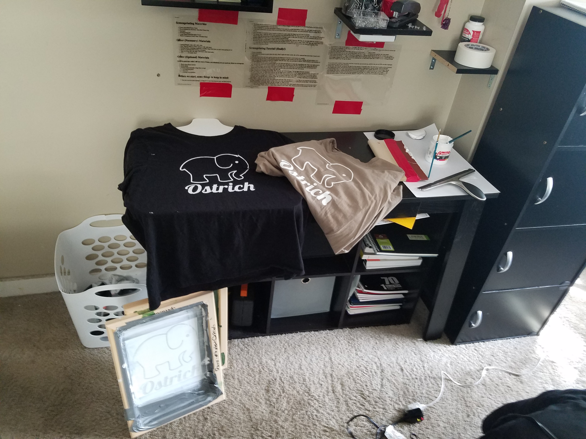- Design something! 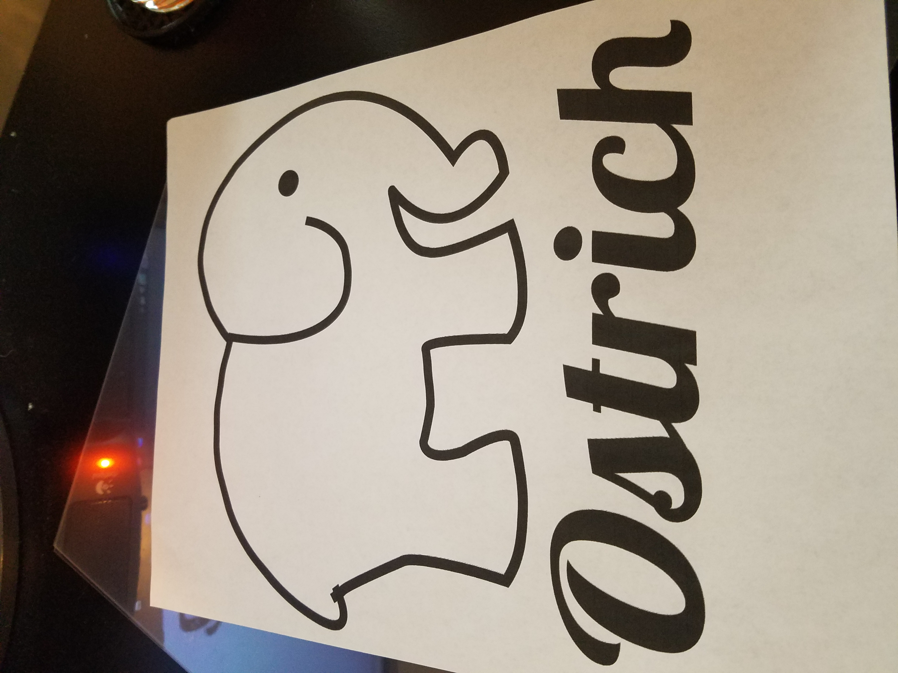
- Print it onto the transparent paper (black ink only). Print 2 copies for better results, this will be explained later (more than 2 doesn't really help much). 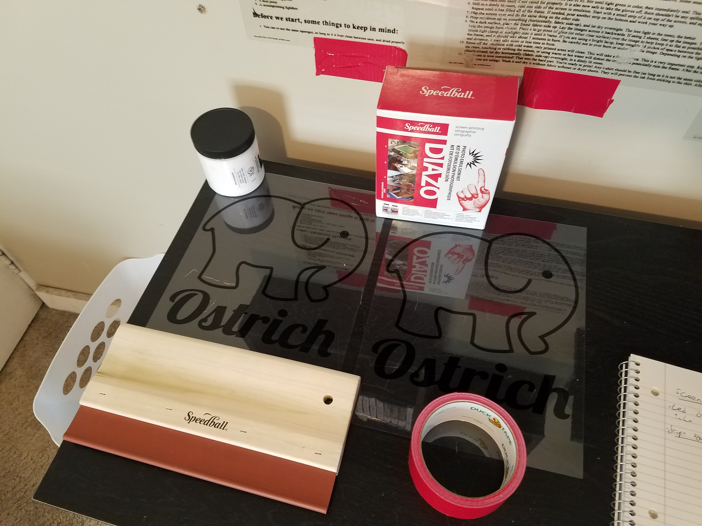
- Clean the screen with cold water, and let it dry for a few hours (or, if you have a scrub brush, dry it gently).
- If you have gloves, put them on. The sensitizer and photo emulsion are both irritants, and stain (skin, clothing, and hard surfaces). In a dimly lit room, fill the sensitizer bottle about halfway with cold water, then close and shake to dissolve. Some sensitizers and emulsions are activated differently, check bottles for instructions. 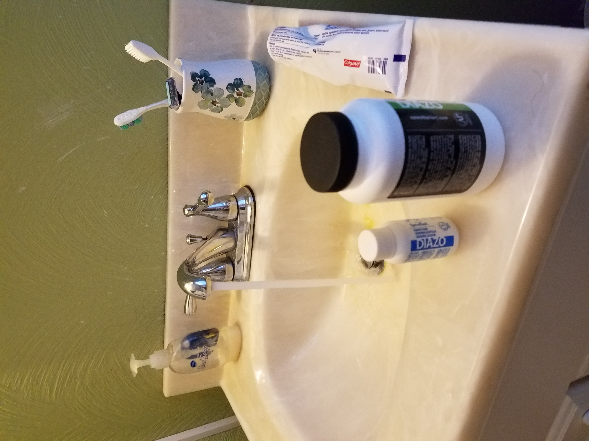
- Pour the sensitizer into the photo emulsion bottle (all of it). Stir until light green in color, then immediately seal. This is now light-sensitive and will burn into itself if not cared for properly. It is also now safe to take the gloves off, there shouldn't be any spilling after this step.
- Still in a dimly lit room, coat one side of the screen in emulsion. Start with a small strip of it on top of the screen, and squeegee down. Repeat until it has filled all of the frame. If needed, pour another strip on the bottom and work your way up.
- Flip the screen over and do the same thing on the other side.
This is what will happen if you use too much emulsion or don't spread it evenly enough. Messing this step up will mess everything up! Your screen should be a nice, even coat of green. A very small amount of emulsion is needed.
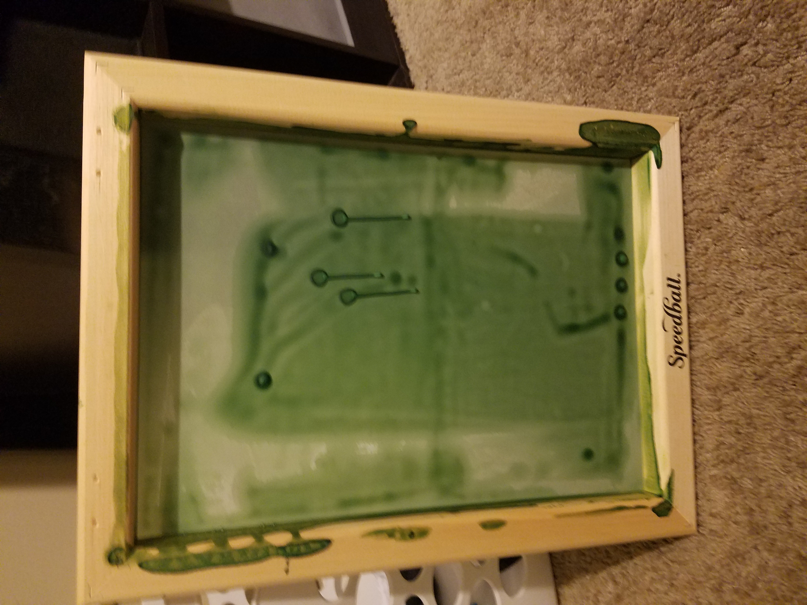
- Prop emulsion up on something (horizontally, fabric side-up), and let dry overnight. The less light in the room, the better. 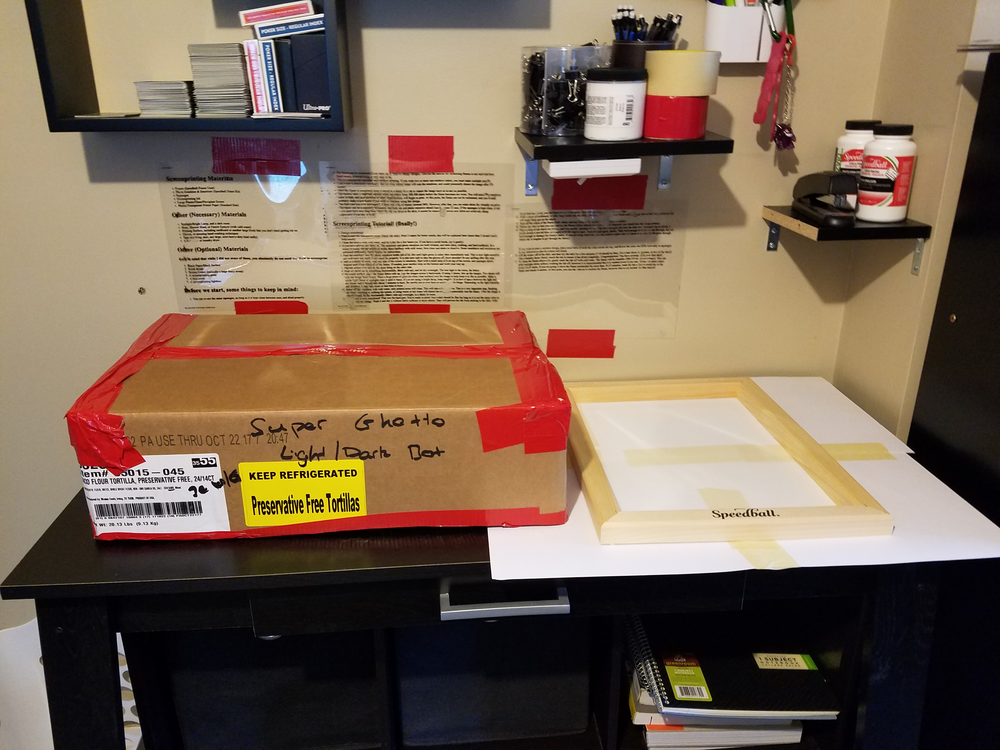
- On a dark surface, place the frame fabric-side up. Lay the images across it backwards. If using 2 sheets, line up the images. Two sheets will help the image burn clearer. Place a large piece of glass (or other clear surface) over the image to help keep it as flat as possible. Shine a bright light (lamp or sunlight) onto it until it burns. If you are using a bright lamp, keep roughly 18 inches of space between the light and the frame, and it should take about 7 minutes to burn. Be careful not to over burn or under burn the image. Depending on the light intensity and distance, it may take more or less time to burn. 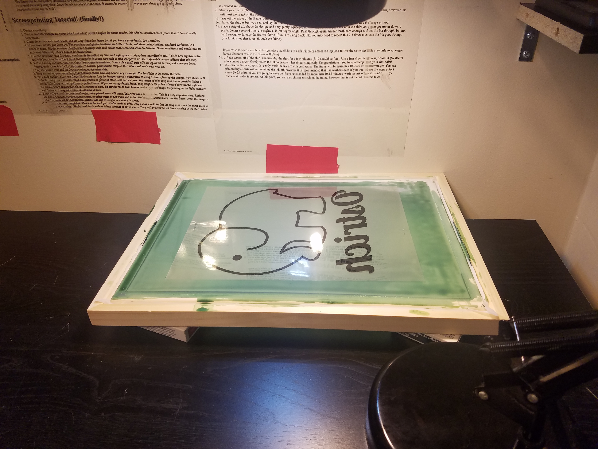
- Rinse off the emulsion with cold water, only printed areas will clean. This will take a few minutes. This is a very important step. Rushing the rinse, touching or rubbing the screen, or using warm or hot water will distort the image and potentially ruin the frame. After the image is clearly rinsed, let dry horizantally (fabric side-up) overnight, in a dimly lit room. 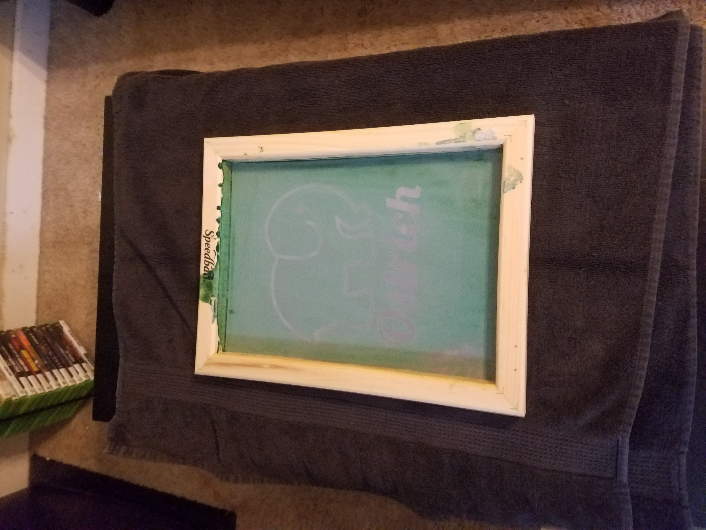
- The screen is now completed! That was the hard part. You're ready to print! Any t-shirt should be fine (as long as it is not the same color as the ink you are using). Wash it and dry it without fabric softener or dryer sheets. They will prevent the ink from sticking to the shirt. After it's printed and dried, you can begin to use these again - they will not remove the ink once it has dried. 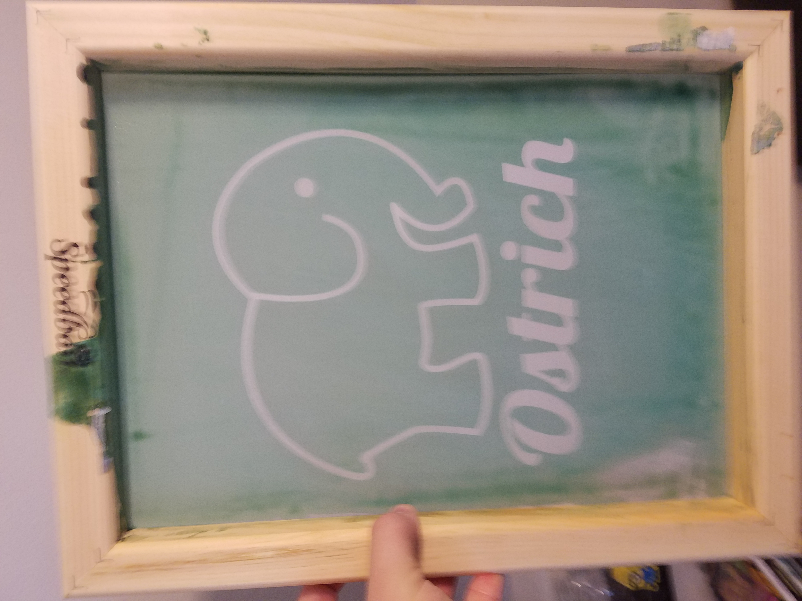
- Slide a piece of cardboard, or other large block into the shirt. This is so that ink does not bleed onto the other side of the shirt, however ink will most likely get on the object.
- Tape off the edges of the frame (both sides), and any holes in the emulsion you happen to notice.
- Flatten the shirt as best you can, and lay the frame (fabric side-down) onto the shirt wherever you would like the image printed. 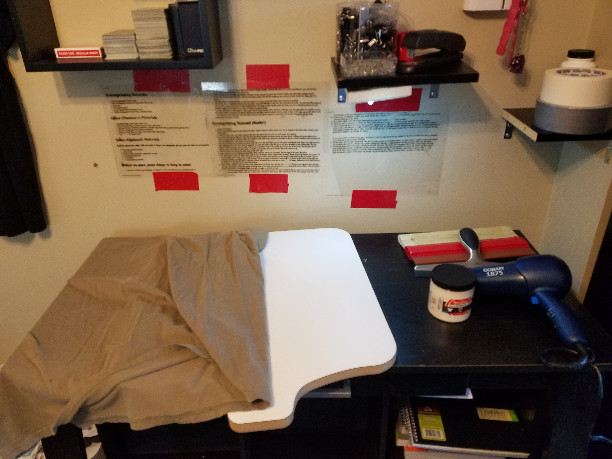
- Place a strip of ink above the design, and very gently, squeegee down. This does not push ink onto the shirt yet. Squeegee (up or down, I prefer down) a second time, at roughly a 45-60 degree angle. Push through again, harder. Push hard enough to force the ink through, but not hard enough to damage the frame's fabric. If you are using black ink, you may need to repeat this 2-3 times to ensure the ink goes through (black ink is tougher to get through the fabric).
If you wish to print a rainbow design, place small dots of each ink color across the top, and follow the same steps. Be sure only to squeegee in one direction or else the colors will blend.
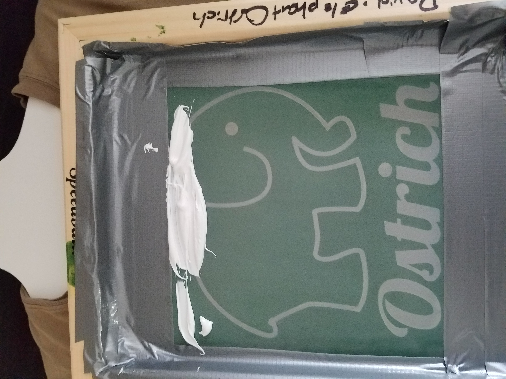
- Lift the screen off of the shirt, and heat dry the shirt for a few minutes (7-10 should be fine). Use a hair dryer, heat press, or toss it (by itself) into a laundry dryer. Gently touch the ink to ensure it has dried completely. Congratulations! You have screenprinted your first shirt! 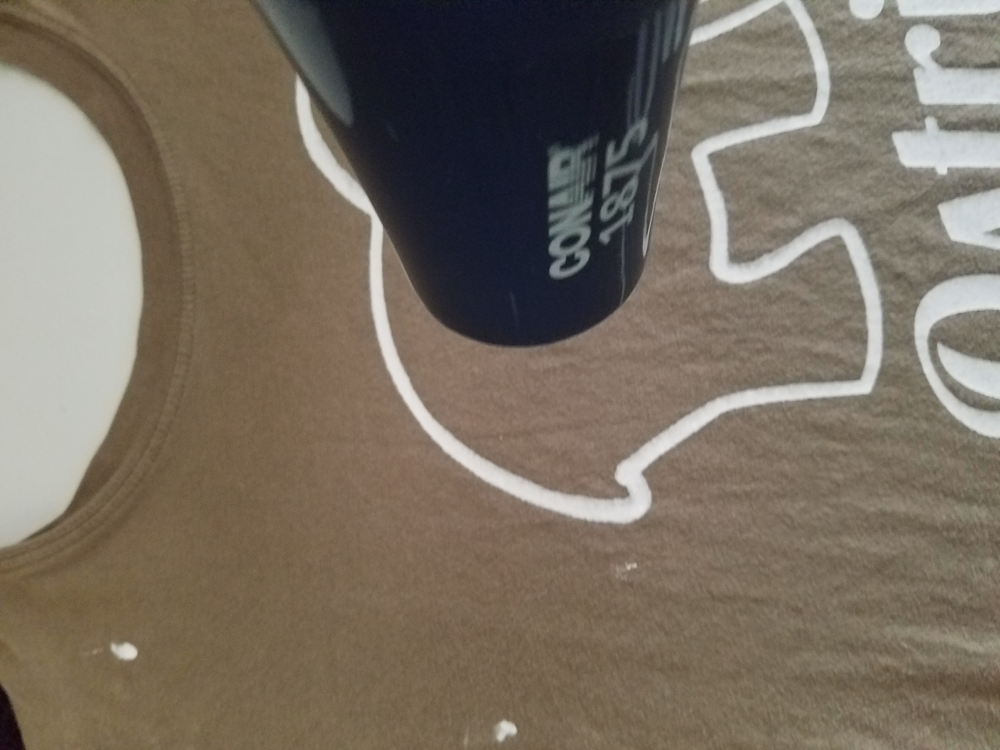
- To clean the frame afterwards, gently wash the ink off with cold water. The frame will be reusable (300-500 times on average). You can print multiple shirts without washing the ink off, however it is recommended that it is washed (even if you want to use the same color) every 20-25 shirts. If you are going to leave the frame unattended for more than 10-15 minutes, wash the ink off, or it could dry to the frame and render it useless. At this point, you can also choose to reclaim the frame, however that is not included in this tutorial. 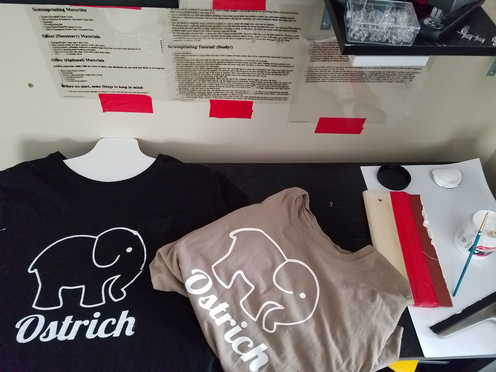